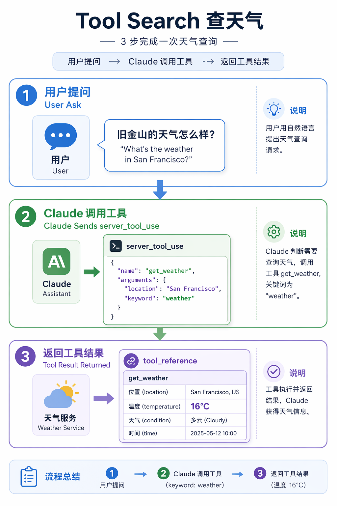
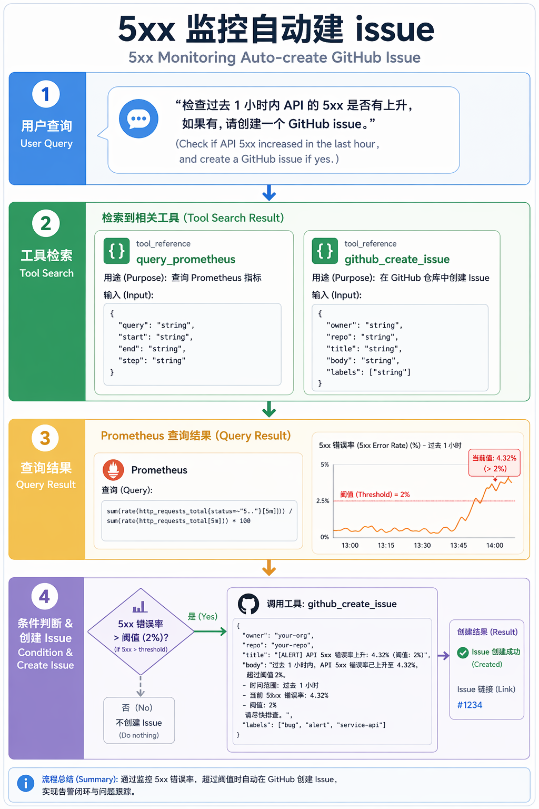
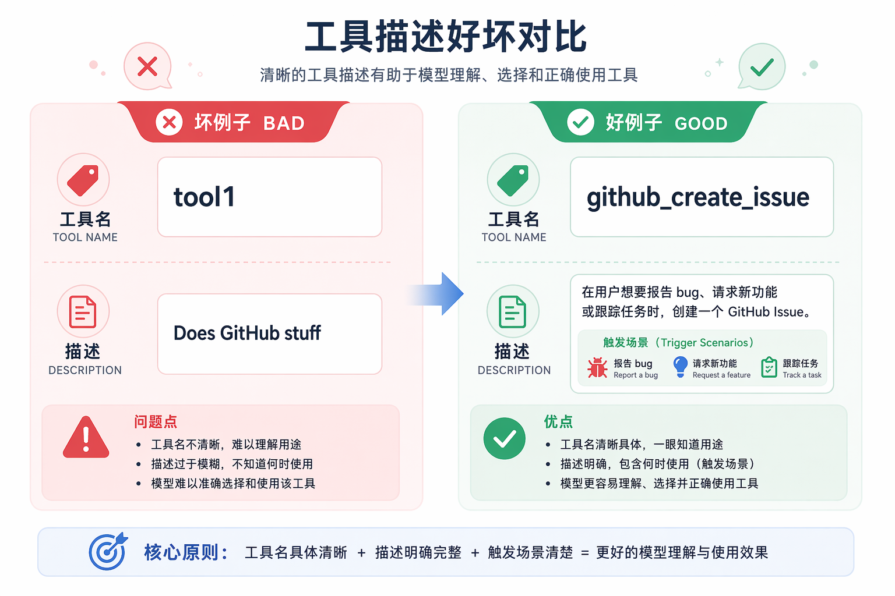

Claude Tool Search 揭秘：AI 的“工具雷达”是怎么工作的？
为什么需要 Tool Search
Claude 的 MCP（Model Context Protocol）生态越接越重。一个典型的开发环境里，GitHub、Slack、Jira、Sentry、Grafana、PagerDuty、Notion、Linear 等 MCP 服务器同时在线，工具数量轻松过百。
问题随之而来：每次对话，模型都要面对这 100 多个工具的 JSON Schema。全部塞进上下文，既浪费 token，也让选择准确率下降。工具越多，模型越容易选错、漏选或多选。
Anthropic 的解法是 Tool Search，也就是延迟加载（deferred tool loading）。核心思路很简单：不必一次性把所有工具定义喂给模型，只先给一份索引；模型需要时再搜索、召回、展开对应的工具。
这套能力最早在 2025 年 11 月以“Advanced Tool Use”形式出现在 Anthropic API（beta header：advanced-tool-use-2025-11-20），2026 年 1 月扩展到 Claude Code 的 MCP 工具加载。它要解决的不是“模型不够聪明”，而是“工具太多时上下文扛不住、选不准”。
核心机制
整个流程可以拆成四步：
- 1.延迟加载（
defer_loading）：大多数工具在启动时不会被直接塞进模型上下文，而是标记为“按需加载”。 - 2.服务端搜索（
server_tool_use）：模型判断需要工具时，先向 Anthropic 服务端发起一次搜索请求。 - 3.返回引用（
tool_reference）：服务端返回匹配工具的引用，不是完整 schema，而是一份“货位单”。 - 4.展开调用（
tool_use）：API 自动把被引用的工具定义展开到上下文中，模型再像往常那样调用它。
关键点在于：只有被搜索命中的工具才会进入模型视野。绝大部分工具一直待在仓库里，从未上过工作台。这样上下文更干净，选择也更聚焦。
几个控制开关
在 Claude Code 和 Anthropic API 中，这套机制由几个参数控制。
ENABLE_TOOL_SEARCH 是总开关。默认在官方 Anthropic endpoint 上是开启的。true 强制启用；false 回到全量加载；auto 按阈值自动触发，例如 auto:5 表示工具描述占上下文 5% 时启用延迟加载。
alwaysLoad 用于少数高频工具，比如文件读写、核心 Git 操作。开启后会跳过搜索直接加载，但数量不宜多，否则延迟加载的意义就被抵消了。
还需要注意代理兼容性。如果你通过 ANTHROPIC_BASE_URL 指向非 Anthropic 官方 endpoint，代理可能不认识 server_tool_use 和 tool_reference 这些 Anthropic API 特有字段，导致静默丢包或报错。走代理时务必先做端到端验证。
什么时候该关掉它
默认情况下，使用官方 Anthropic endpoint 时 Tool Search 是开启的，不需要手动干预。
只有一种情况建议关闭：你通过 ANTHROPIC_BASE_URL 接入了非 Anthropic 官方 endpoint。这些后端通常不理解 server_tool_use、tool_reference、tool_search_tool_result 等 Anthropic API 特有字段，开启 Tool Search 后容易出现报错或异常。
关闭方式很简单：在 Claude Code 配置或 cc-switch 里把 ENABLE_TOOL_SEARCH 设为 "false"，效果就是回到全量加载的老路。代价是上下文更满、工具选择噪声更大，但至少能跑通。
三个真实 query
查天气
你问“旧金山现在多少度？”Claude 搜索 weather，召回 get_weather，然后调用得到温度。工具总数再多，这个 query 的调用路径都一样：搜索 → 召回 → 展开 → 调用。

GitHub Actions 失败 + 相关 issue
你问“最近有没有失败的 GitHub Actions，顺便看看有没有相关 issue？”搜索一次召回三个工具：列出 workflow runs、读取 run logs、搜索 issues。Claude 按顺序执行：先看失败记录，再查日志，最后用错误关键词搜 issue。
5xx 监控 + 自动建 issue
你问“帮我查一下最近一小时 API 的 5xx 是否升高，如果升高就帮我建一个 GitHub issue。”Claude 一次召回 Prometheus 查询和 GitHub issue 创建两个工具，先查指标，再按条件分支决定是否建 issue。

这三个例子难度递增，但底层节奏一致：模型先搜索，再召回，再调用。
给开发者的建议
想让 Tool Search 效果更好，工具本身的元数据质量是关键。
- 工具名带上命名空间，例如
github_create_issue而不是create_issue，mcp__grafana__query_prometheus而不是query_metrics。 - 工具描述写明触发场景，例如“当用户想报告 bug、请求功能或跟踪任务时使用”。搜索会同时看名字和描述。
input_schema字段也要写描述。字段越具体，越容易被命中。- 高频工具可以
alwaysLoad，但数量要克制。太多就等于没开延迟加载。 - 走代理或网关时要做端到端验证，确认
server_tool_use和tool_reference没被静默吞掉。

它不是银弹
Tool Search 能解决上下文膨胀和选择噪声，但不是万能药。
- HTTP / Streamable HTTP 形态的 MCP 工具目前可能不会被延迟加载。如果你的 MCP 架构是 HTTP gateway 聚合大量上游工具，Tool Search 的收益会打折扣。
- 代理兼容性仍是常见坑。很多第三方代理只识别 text、tool_use、tool_result，不认识
server_tool_use和tool_reference。 auto阈值有反直觉的一面：上下文窗口越大，10% 的绝对阈值就越高。在 1M token 模型上，50K 工具集只占总上下文的 5%，系统可能判定“不需要延迟加载”。- 工具描述和任务清晰度仍是上限。索引再智能，也救不了一本乱写的目录。
结语
Claude Tool Search 的本质不是让模型更聪明，而是让工具上下文从“全量加载”变成“按需索引”。模型不必背下所有工具的说明书，只在需要时搜索、召回、调用。对 MCP 工具越来越多的场景来说，这是一种必要的工程优化。